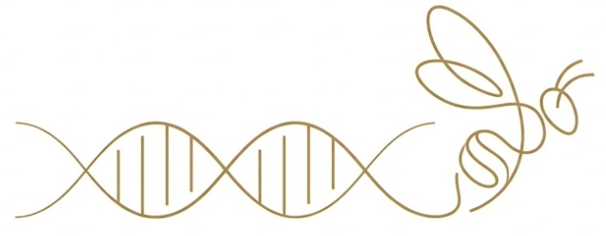

Hello, I'm
Dr. Jane Researcher
Molecular Biologist · Bioinformatician · Bee Researcher
I am a researcher working at the intersection of honey bee biology, molecular biology, and bioinformatics. My work focuses on understanding the molecular mechanisms underlying honey bee health, colony behavior, and pollinator conservation through computational and experimental approaches.
